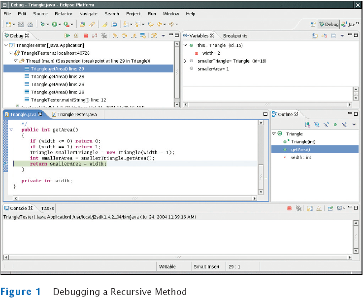

Chapter 18
Recursion
Chapter Goals
- To learn about the method of recursion
- To understand the relationship between recursion and iteration
- To analyze problems that are much easier to solve by recursion
than by iteration
- To learn to "think recursively"
- To be able to use recursive helper methods
- To understand when the use of recursion affects the efficiency of
an algorithm
Triangle Numbers
- Compute the area of a triangle of width n
- Assume each [] square has an area of 1
- Also called the nth triangle number
- The third triangle number is 6
[]
[][]
[][][]
Outline of Triangle Class
public class Triangle
{
public Triangle(int aWidth)
{
width = aWidth;
}
public int getArea()
{
. . .
}
private int width;
}
Handling Triangle of Width 1
Handling the General Case
- Assume we know the area of the smaller, colored triangle
[]
[][]
[][][]
[][][][]
- Area of larger triangle can be calculated as:
smallerArea + width
- To get the area of the smaller triangle
Completed getArea method
public int getArea()
{
if (width == 1) return 1;
Triangle smallerTriangle = new Triangle(width - 1);
int smallerArea = smallerTriangle.getArea();
return smallerArea + width;
}
Computing the area of a triangle with width 4
- getArea method makes a smaller triangle of width 3
- It calls getArea on that triangle
- That method makes a smaller triangle of width 2
- It calls getArea on that triangle
- That method makes a smaller triangle of width 1
- It calls getArea on that triangle
- That method returns 1
- The method returns smallerArea + width = 1 + 2 = 3
- The method returns smallerArea + width = 3 + 3 = 6
- The method returns smallerArea + width = 6 + 4 = 10
Recursion
Other Ways to Compute Triangle Numbers
File Triangle.java
TriangleTester.java
Output
Enter width: 10
Area = 55
Self Check
- Why is the statement if (width == 1) return 1; in the getArea
method unnecessary?
- How would you modify the program to recursively compute the area
of a square?
Answers
- Suppose we omit the statement. When computing the area of a
triangle with
width 1, we compute the area of the triangle with width 0 as 0, and
then add 1,
to arrive at the correct area.
- You would compute the smaller area recursively, then return
smallerArea + width + width - 1.
[][][][]
[][][][]
[][][][]
[][][][]
Of course, it would be simpler to compute

Permutations
- Design a class that will list all permutations of a string
- A permutation is a rearrangement of the letters
- The string "eat" has six permutations
"eat"
"eta"
"aet"
"tea"
"tae"
Public Interface of PermutationGenerator
public class PermutationGenerator
{
public PermutationGenerator(String aWord) { . . . }
ArrayList<String> getPermutations() { . . . }
}
File PermutationGeneratorTester.java
Output
eat
eta
aet
ate
tea
tae
To Generate All Permutations
- Generate all permutations that start with 'e' , then 'a'
then 't'
- To generate permutations starting with 'e', we need to
find all permutations of "at"
- This is the same problem with simpler inputs.
- Use recursion
To Generate All Permutations
- getPermutations: loop through all positions in the word
to be permuted
- For each position, compute the shorter word obtained by removing
ith letter:
String shorterWord = word.substring(0, i) + word.substring(i + 1);
- Construct a permutation generator to get permutations of the
shorter word
PermutationGenerator shorterPermutationGenerator
= new PermutationGenerator(shorterWord);
ArrayList<String> shorterWordPermutations
= shorterPermutationGenerator.getPermutations();
To Generate All Permutations
File PermutationGenerator.java
Self Check
- What are all permutations of the four-letter word beat?
- Our recursion for the permutation generator stops at the empty
string. What
simple modification would make the recursion stop at strings of length
0 or 1?
Answers
- They are b followed by the six permutations
of eat, e followed by the six permutations
of bat, a followed by the six permutations of bet,
and t followed by the six permutations of bea.
- Simply change if (word.length() == 0) to if
(word.length() <= 1), because a
word with a single letter is also its sole permutation.
Tracing Through Recursive Methods

Thinking Recursively
- Problem: test whether a sentence is a palindrome
- Palindrome: a string that is equal to itself when you reverse all
characters
- A man, a plan, a canal–Panama!
- Go hang a salami, I'm a lasagna hog
- Madam, I'm Adam
Implement isPalindrome Method
public class Sentence
{
/**
Constructs a sentence.
@param aText a string containing all characters of the sentence
*/
public Sentence(String aText)
{
text = aText;
}
/**
Tests whether this sentence is a palindrome.
@return true if this sentence is a palindrome, false otherwise
*/
public boolean isPalindrome()
{
. . .
}
private String text;
}
Thinking Recursively: Step-by-Step
- Consider various ways to simplify inputs
Here are several possibilities:
- Remove the first character
- Remove the last character
- Remove both the first and last characters
- Remove a character from the middle
- Cut the string into two halves
Thinking Recursively: Step-by-Step
- Combine solutions with simpler inputs into a solution
of the original problem
- Most promising simplification: remove first and last
characters
"adam, I'm Ada", is a palindrome too!
- Thus, a word is a palindrome if
- The first and last letters match, and
- Word obtained by removing the first and last letters is a
palindrome
- What if first or last character is not a letter? Ignore it
- If the first and last characters are letters, check
whether they match;
if so, remove both and test shorter string
- If last character isn't a letter, remove it and test
shorter string
- If first character isn't a letter, remove it and test
shorter string
Thinking Recursively: Step-by-Step
- Find solutions to the simplest inputs
- Strings with two characters
- No special case required; step two still applies
- Strings with a single character
- The empty string
Thinking Recursively: Step-by-Step
- Implement the solution by combining the simple cases
and the reduction step
Recursive Helper Methods
Recursive Helper Methods
Recursive Helper Methods: isPalindrome
Self Check
- Do we have to give the same name to both isPalindrome
methods?
- When does the recursive isPalindrome method stop
calling itself?
Answers
- No–the first one could be given a different name such
as substringIsPalindrome.
- When start >= end, that is, when the investigated
string is either empty or has length 1.
Fibonacci Sequence
- Fibonacci sequence is a sequence of numbers defined by
f1 = 1
f2 = 1
fn = fn-1
+ fn-2
- First ten terms
1, 1, 2, 3, 5, 8, 13, 21, 34, 55
File FibTester.java
Output
Enter n: 50
fib(1) = 1
fib(2) = 1
fib(3) = 2
fib(4) = 3
fib(5) = 5
fib(6) = 8
fib(7) = 13
. . .
fib(50) = 12586269025
The Efficiency of Recursion
- Recursive implementation of fib is straightforward
- Watch the output closely as you run the test program
- First few calls to fib are quite fast
- For larger values, the program pauses an amazingly long time
between outputs
- To find out the problem, lets insert trace messages
File FibTrace.java
Output
Call Tree for Computing fib(6)
The Efficiency of Recursion
- Method takes so long because it computes the same values over and
over
- The computation of fib(6) calls fib(3) three
times
- Imitate the pencil-and-paper process to avoid computing the
values more than once
File FibLoop.java
Output
Enter n: 50
fib(1) = 1
fib(2) = 1
fib(3) = 2
fib(4) = 3
fib(5) = 5
fib(6) = 8
fib(7) = 13
. . .
fib(50) = 12586269025
The Efficiency of Recursion
- Occasionally, a recursive solution runs much slower than its
iterative counterpart
- In most cases, the recursive solution is only slightly slower
- The iterative isPalindrome performs only slightly
better than recursive solution
- Each recursive method call takes a certain amount of
processor time
- Smart compilers can avoid recursive method calls if they follow
simple patterns
- Most compilers don't do that
- In many cases, a recursive solution is easier to understand and
implement correctly than an iterative solution
- "To iterate is human, to recurse divine.", L. Peter Deutsch
Iterative isPalindrome Method
Self Check
- You can compute the factorial function either with a
loop, using the definition
that n! = 1 × 2 × . . . × n, or
recursively, using the definition that 0! = 1 and
n! = (n - 1)! × n. Is the recursive
approach inefficient in this case?
- Why isn't it easy to develop an iterative solution for the
permutation generator?
Answers
- No, the recursive solution is about as efficient as the
iterative approach. Both
require n - 1 multiplications to compute n!.
- An iterative solution would have a loop whose body computes the
next permutation
from the previous ones. But there is no obvious mechanism for getting
the next permutation. For example, if you already found permutations eat,
eta,
and aet, it is not clear how you use that information to get
the next permutation.
Actually, there is an ingenious mechanism for doing just that, but it
is far
from obvious–see Exercise P18.12.
The Limits of Computation
The Limits of Computation
Using Mutual Recursions
- Problem: to compute the value of arithmetic expressions
such as
3 + 4 * 5
(3 + 4) * 5
1 - (2 - (3 - (4 - 5)))
- Computing expression is complicated
- * and / bind more strongly than + and -
- parentheses can be used to group subexpressions
Syntax Diagram for Evaluating an Expression
Using Mutual Recursions
- An expression can broken down into a sequence of terms, separated
by + or -
- Each term is broken down into a sequence of factors, separated by
* or /
- Each factor is either a parenthesized expression or a number
- The syntax trees represent which operations should be carried out
first
Syntax Tree for Two Expressions
Mutually Recursive Methods
- In a mutual recursion, a set of cooperating methods calls each
other repeatedly
- To compute the value of an expression, implement 3 methods that
call each other recursively
- getExpressionValue
- getTermValue
- getFactorValue
The getExpressionValue Method
public int getExpressionValue()
{
int value = getTermValue();
boolean done = false;
while (!done)
{
String next = tokenizer.peekToken();
if ("+".equals(next) || "-".equals(next))
{
tokenizer.nextToken(); // Discard "+" or "-"
int value2 = getTermValue();
if ("+".equals(next)) value = value + value2;
else value = value - value2;
}
else done = true;
}
return value;
}
The getFactorValue Method
public int getFactorValue()
{
int value;
String next = tokenizer.peekToken();
if ("(".equals(next))
{
tokenizer.nextToken(); // Discard "("
value = getExpressionValue();
tokenizer.nextToken(); // Discard ")"
}
else
value = Integer.parseInt(tokenizer.nextToken());
return value;
}
Using Mutual Recursions
To see the mutual recursion clearly, trace through the expression (3+4)*5:
- getExpressionValue calls getTermValue
- getTermValue calls getFactorValue
- getFactorValue consumes the ( input
- getFactorValue calls getExpressionValue
- getExpressionValue returns eventually with
the value of 7,
having consumed 3 + 4. This is the recursive call.
- getFactorValue consumes the ) input
- getFactorValue returns 7
- getTermValue consumes the inputs * and 5
and returns 35
- getExpressionValue returns 35
File Evaluator.java
File ExpressionTokenizer.java
File EvaluatorTester.java
Output
Enter an expression: 3+4*5
3+4*5=23
Self Check
- What is the difference between a term and a factor? Why
do we need both concepts?
- Why does the expression parser use mutual recursion?
- What happens if you try to parse the illegal expression 3+4*)5?
Specifically,
which method throws an exception?
Answers
- Factors are combined by multiplicative operators (*
and /), terms are combined
by additive operators (+, -). We need both so that
multiplication can bind more
strongly than addition.
- To handle parenthesized expressions, such as 2+3*(4+5).
The subexpression 4+5
is handled by a recursive call to getExpressionValue.
- The Integer.parseInt call in getFactorValue
throws an exception when it is
given the string ")".